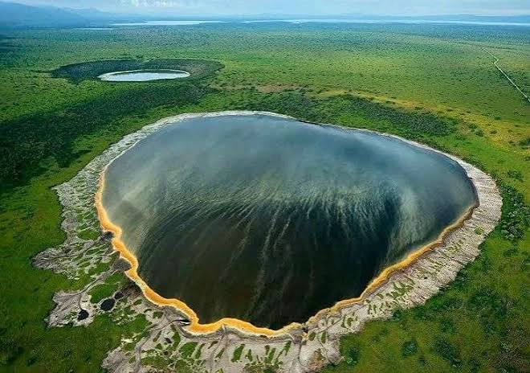

Ngorongoro National Park
Welcome to the Ngorongoro National Park, a
UNESCO World Heritage site known for its rich biodiversity and stunning landscapes.
Ngorongoro is one of Tanzania’s most remarkable wildlife destinations, famous for its
breathtaking landscapes, rich wildlife, and the spectacular Ngorongoro Crater. Often described
as a natural wonder, the crater is home to lions, elephants, buffaloes, zebras, wildebeest, and
many other animals. Visitors can enjoy exciting game drives while taking in the stunning scenery
of the crater and surrounding highlands. Ngorongoro also has great cultural importance, as the
Maasai people live in the area and continue their traditional pastoral way of life. With its
combination of wildlife, natural beauty, and cultural heritage, Ngorongoro offers an
unforgettable experience for travellers exploring Tanzania.
